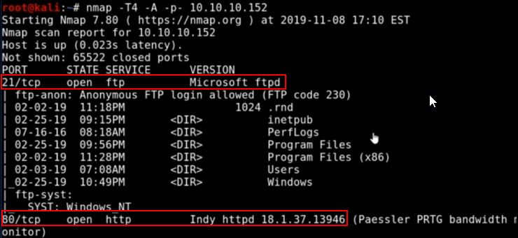

Walktrough - Netmon
Windows Machine
First, start a "nmap -T4 -A -p- IPADDRESS"




We have a lot over here:
FTP server on port 21,
web server on port 80 (Indy),
SMB on port 139/445,
Microsoft HTTPAPI on port 5985/47001
and a lot of RCP calls
################################################################
Web Server
We can use FTP to put a malicious file and get executed with a Web Server Request.
We can see in the nmap scan that there is “inetpub” folder: it is an IIS Web Folder
First of all, check the webpage:


Version 18.1.37 of PRTG Network Manager
Everytime we see a default login page, we can search for default credentials:


Default credentials didn't work.
We can search more on searchsploit:


We can search for where the data are stored:


Using the FTP Server, we found the Paessler folder in: %ALLUSERSPROFILE%\Application data\Paessler\PRTG Network Monitor\V7


We can see some interesting files over there: the .old and the .bak (backups)


Searching trough the files, we can see in the old.bak file:


If we try to login with this credentials, we fail.
The password is: PrTg@dmin2018
We can try with PrTg@dmin2019 , PrTg@dmin2020 etc.
The PrTg@dmin2019 work!


The exploit to work needs a cookie (you can obtain it with Burp Suite) from the authenticated login


We will use the .sh script for RME (seen in searchsploit)


We can use other tools like Impacket and you can run like:
psexec.py, smbexec.py, wmiexec.py etc.
(Are less likely to be stopped from antiviruses)
... or just use another way to log in